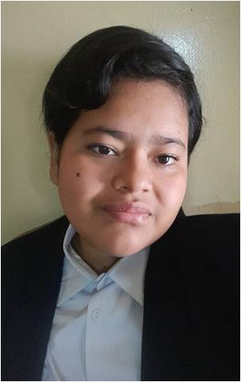
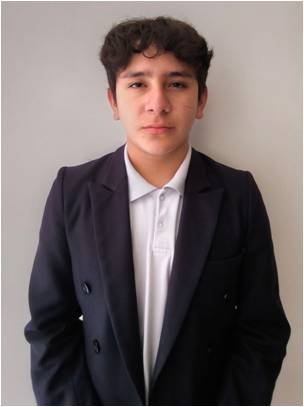
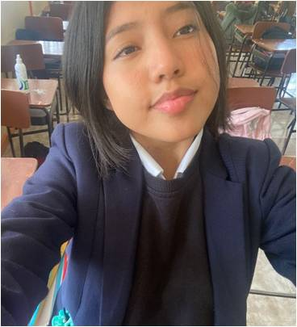

Conoce a Nuestro Equipo 👩💻👨💻

Pamela Solange Aponte Alvarado
Fecha de nacimiento: 17 de diciembre del 2007
Ocupación: Estudiante de la Unidad Educativa “Baños”
Lugar de nacimiento: Tungurahua, Baños de Agua Santa
Figura Profesional: Informática
Colaboro con la Documentación, información y la programación de la pagina WEB

Elkyn Zambrano Fernando Calvache
Fecha de Nacimiento: 5 de marzo del 2007
Lugar de Nacimiento: Pichincha – Quito
Ocupación: Estudiante de la Unidad Educativa “Baños”
Figura Profesional: Informática
Colaboró en la documentación de la página web, conjunto también en la programación y estructura, a coordinar paletas de colores y mejorar la interacción

Pamela Anahi Sailema Cárdenas
Fecha de nacimiento: 27 de mayo del 2008
Lugar de nacimiento: Tungurahua, Baños de Agua Santa
Ocupación: Estudiante de la Unidad Educativa “Baños”
Figura Profesional: Informática
Colaboro con la Documentación, información y la programación de la página WEB